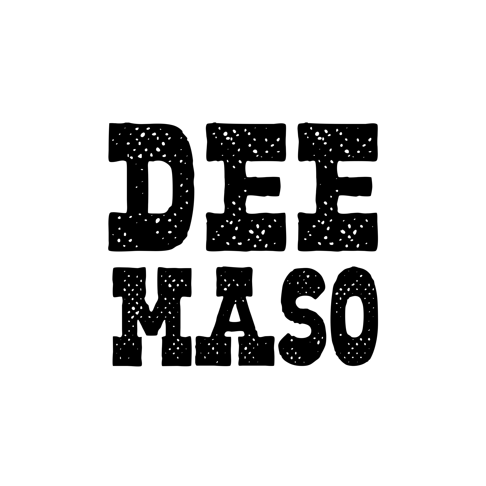

Your lives depend on one man's paranoia: the Tyrant. Assume the role of a paranoid dictator and find out who among the other players is sabotaging the interests of the Tyrant. This social deduction game will test your investigative and deception skills. Will you be clever enough to save yourself before the Tyrant's paranoia reaches its peak? You will have proved your loyalty (or not) if your name does not appear among the victims of the Purges.
There was a time when men settled their disagreements by following only one
law: the trigger. The quickest was right, after all, how can you be right if you're dead?
In Not Enough Coffins you'll prove every time that you are right by relying exclusively on your
revolver. Challenge to a duel the scum that littered the lands of the Wild West: outlaws, swindlers,
bounty hunters, drunks and many others. There is a coffin ready for each of them, will you be able to
fill them all? But be careful, there's one for you too!
Unlock weapons and skills that will help you take out anyone who dares to stand on the wrong side of the barrel.